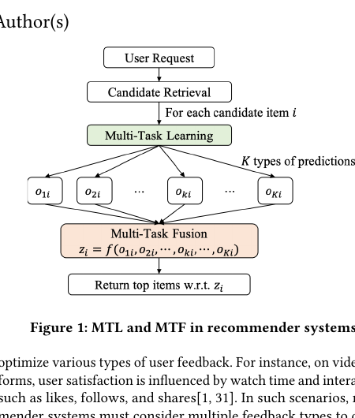
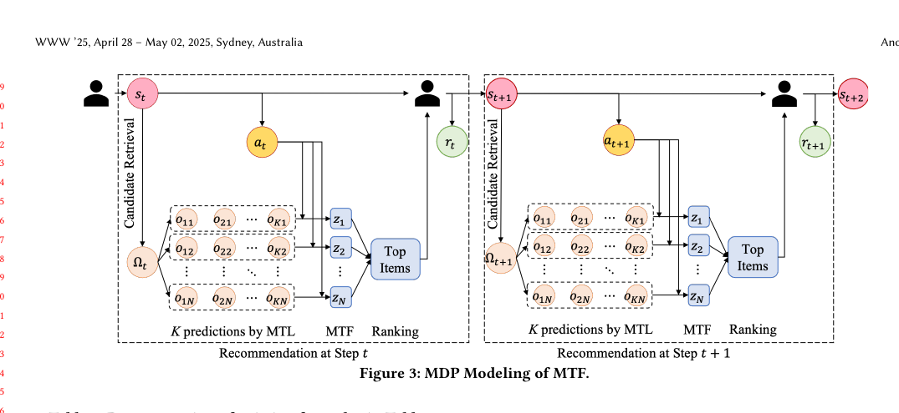
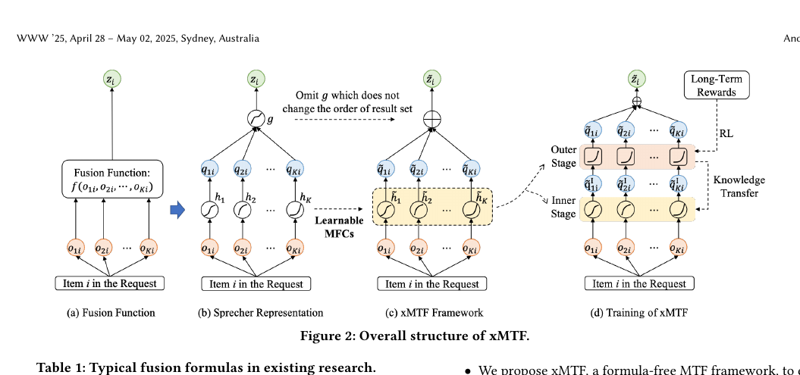
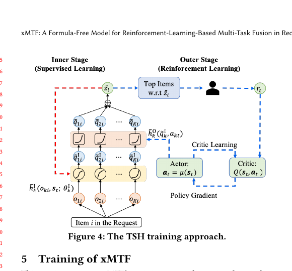
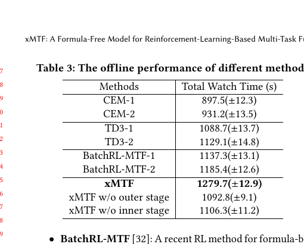
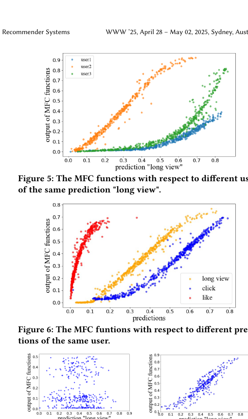
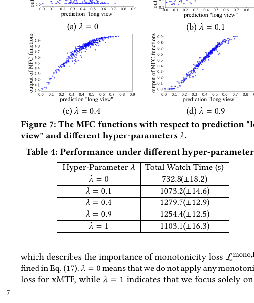
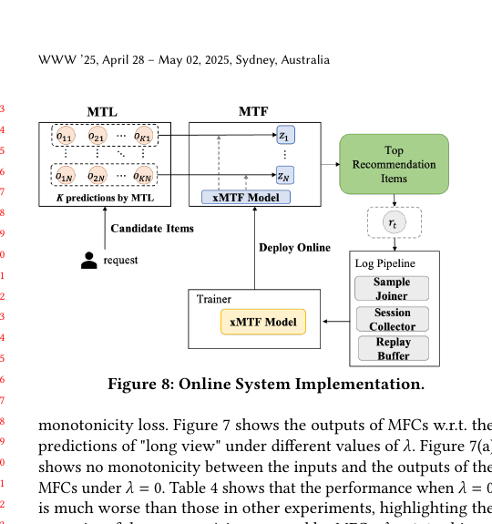
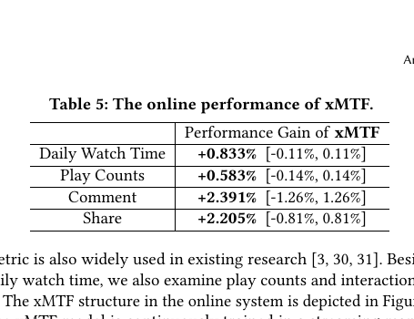

xMTF
1. 基本信息
- 标题：xMTF: A Formula-Free Model for Reinforcement-Learning-Based Multi-Task Fusion in Recommender Systems
- 作者：Yang Cao, Changhao Zhang, Xiaoshuang Chen, Kaiqiao Zhan, Ben Wang
- 机构：Kuaishou Technology；Peking University
- 时间：2025
- 会议：WWW 2025
- arXiv：https://arxiv.org/abs/2504.05669
- DOI：https://doi.org/10.1145/3696410.3714959
- 关键词：Multi-Task Fusion、Reinforcement Learning、Monotonic Fusion、Short Video Recommendation
- pdf位置：
C:\Users\chaol\Desktop\推荐论文阅读\reward sys\xMTF.pdf - 笔记位置：
论文笔记/精排/LTR与多目标融合/xMTF.md - 分类：精排 / LTR与多目标融合
2. 相关论文
2.1 与 UnifiedRL 的联系与区别
UnifiedRL 是 xMTF 之前更典型的 RL-MTF 工业路线：它保留多目标预测分数的固定融合公式，让 RL 输出 power / bias 这类融合参数，并重点解决 offline RL 里的 exploration policy、OOD 约束和 progressive training 闭环。xMTF 继承的是“用 RL 优化长期满意度”的问题设定，但批评这类方法仍然是 formula-based，因为真正的融合函数族已经被手写公式限制住了。
因此两篇的核心差别是：UnifiedRL 更像是在既有融合公式内把 RL 训练做得更稳、更高效；xMTF 则把问题往前推一步，试图连融合函数本身也学出来，用 MFC + Two-Stage Hybrid 在保持单调性的同时扩大表达空间。
2.2 与 EMER 的联系与区别
xMTF 和 EMER 解决的是同一类工业问题：都想替代多目标排序里依赖人工经验的融合公式，把上游多任务预测真正接成一个可学习的最终排序器。从 serving 结果看，两篇论文最后都可以表述成“对一个 request 里的每个 candidate 输出一个标量分数，再按分数排序”。二者也都没有 item-level 的“总体满意度”真值标签，因此都不能像普通 CTR 任务那样用一个直接监督收敛，而是需要借助更间接的满意度信号来训练最终排序分数：xMTF 依赖 RL 建模长期回报，EMER 依赖 request 内后验比较关系、先验 pxtr 排序信号，以及 offline-online 对齐机制。
但两篇方法的输入组织、建模方式和 loss 设计差异很大。xMTF 的输入是“单个 item 的 K 个多任务预测 o_{ki} + 当前用户状态 s_t”，输出是这个 item 的单个分数 ；给定同一个 s_t 后，某个 item 的分数不需要看同组其它 candidate，所以它本质上是 point-wise、可分解的 fusion learning。它的建模核心是 K 个 MFC，把每个目标单独变成一份单调贡献，再求和；loss 则由外层 actor-critic 的长期奖励优化、内层从外层蒸馏的 BPR-style L_transfer、以及保证每路变换单调的 L_mono 组成。EMER 的输入则是“同一 request 的整组候选”，包括 user/item 特征、多个 pxtr 和 NormalizedRanks，输出是整组候选的分数向量 ；某个 candidate 的分数会因为 self-attention 而显式受同组其它 candidate 影响，所以它是 request-wise、联合比较式 reranking。它的 loss 也不是 RL 蒸馏，而是 L_posterior + L_prior 这类 request 内 pairwise comparative losses，再配合 IPUT 和 self-evolving 处理曝光偏差与 offline-online 不一致。简化地说，xMTF 更像“学习更强的融合函数”，EMER 更像“学习更强的候选集合比较器”。
2.3 与 BatchRL-MTF 的联系与区别
BatchRL-MTF 是 xMTF 论文里最典型的前置 RL-MTF 基线：它已经把 MTF 写成长期满意度优化问题，并用 Batch RL 学个性化融合权重，但融合函数仍是手写的 。xMTF 对它的核心批评是：RL 只是在固定公式里调参数，不能突破公式本身的表达上限；因此 xMTF 才转向 MFC，把每一路目标的单调变换函数本身学出来。
3. 一句话总结
xMTF 的核心观点是：RL-based multi-task fusion 的真正瓶颈不只是“RL 难训”，而是“先把融合函数写死成公式，再让 RL 只调几个系数”；它用 Sprecher 表示把融合函数改写成一组可学习的单变量单调变换之和，再用 MFC + Two-Stage Hybrid 训练，把“公式式 MTF”推进成真正的 formula-free MTF。
4. 论文在解决什么问题
4.1 为什么多任务融合比多任务预测更难
这篇论文先把工业推荐拆成两段：
MTL负责分别预测点击、长看、点赞、分享等多种反馈。MTF再把这些预测揉成一个最终排序分数。
真正难的是第 2 步。
因为用户不会对“总体满意度”直接打标签，系统能观测到的往往是 session length、daily watch time、retention 这类长周期反馈，而这些反馈又没法逐 item 精确归因。
所以 MTF 的目标不是“把多个 pxtr 再平均一下”，而是要在没有直接 item-level 总体满意度标签的情况下，找出一个能更好对齐长期收益的融合函数。
4.2 Figure 1：MTL 管多目标预测，MTF 管最终决策

Figure 1 把问题关系画得很清楚：
Multi-Task Learning先对每个候选 item 输出多个目标预测o_{1i}, o_{2i}, ..., o_{Ki}。Multi-Task Fusion再把这些预测合成一个标量z_i，最终按这个分数返回 top items。
这张图的重点不是结构复杂，而是提醒读者：
在工业系统里，最终影响排序结果的不是某个单一 pxtr，而是后面的融合层。
4.3 现有 RL-based MTF 为什么还是不够
论文认为已有 RL-based MTF 方法虽然考虑了长期奖励，但本质上仍是 formula-based：
- 先手写一个融合公式；
- 再让 RL 去调里面的少数系数。
典型形式大致有三类：
- 线性加权和：
- 对数加权和：
- 幂乘形式：
作者批评它们的点不在于“RL 不好”，而在于：
- 公式本身先把搜索空间限制死了；
- 不同公式会带来不同推荐结果，但大家并不知道哪种公式更对；
- 即使做 personalization，也只是“个性化几个系数”，不是“个性化融合函数本身”。
4.4 Figure 3：RL 视角下，MTF 的动作就是融合参数

Figure 3 把 MTF 写成一个标准 MDP：
- 状态
s_t：用户当前状态； - 候选集合 ：retrieval 给出的候选 item；
- 输入预测 ：MTL 对候选 item
i的第k个目标预测； - 动作
a_t：当前时刻使用的融合参数； - 输出分数：
- 奖励
r_t：用户看完本轮推荐后的长期反馈； - 目标：最大化 session 里的长期累计奖励。
这一定义很重要，因为它说明本文不是在改 MTL 主干，而是在改“MTF 这层到底长什么样”。
4.5 这篇论文抓住的核心约束：融合函数必须对每个目标单调递增
作者强调，融合函数 f 需要满足一个很关键的单调性条件：
- ==如果其它输入不变，只把某个预测
o_{ki}变大，那么最终融合分数不应该变小。 == 原因很直观：
点击率、长看率、分享率这类预测通常都和用户满意度正相关，所以某一路预测升高，不应该把 item 的最终排序位置反而往后推。
也正因为要守住这个单调性，过去的方法才更愿意选手写公式；但这又把搜索空间压得很小，这就是 xMTF 想打破的地方。
5. xMTF 方法总览
5.1 Figure 2：xMTF 把“融合公式”拆成一组可学习的单调函数

Figure 2 是整篇论文最关键的一张图，可以按四部分来读：
(a) Fusion Function：原问题是学习一个多变量融合函数f(o_{1i}, ..., o_{Ki})。(b) Sprecher Representation：把多变量单调函数改写成g(\sum_k h_k(o_{ki}))，其中g和每个h_k都是单调递增函数。(c) xMTF Framework：用可学习的MFC去替代这些h_k。(d) Training of xMTF：训练时再把每个MFC拆成外层 RL 阶段和内层 supervised 阶段。
这张图真正说明的不是“模块很多”，而是作者的理论-模型-训练三步链路是连起来的：
- 先用表示定理证明“公式-free”是合法的；
- 再用 MFC 承接这个表示；
- 最后再用 TSH 解决训练难度。
5.2 Proposition 4.1：为什么可以从“融合公式”退化成“每路单调变换求和”
论文的 Proposition 4.1 说：只要融合函数对每一路输入都单调递增，就存在==单调函数 g 和单调函数 h_k==，使得
其中
这一步来自 Sprecher Representation Theorem。
它的意义是：原来那个看起来很难直接学的多变量融合函数，可以被拆成“每一路预测各自做一个单调变换，然后再聚合”。
最容易被忽略的一点是：论文随后把外层 g 直接去掉了。
原因不是 g 不重要，而是推荐排序只关心 item 的相对顺序。如果 g 本身也是单调递增，那么
\sum_k q_{ki}的大小关系，- 和
g(\sum_k q_{ki})的大小关系，
是一致的，所以 g 不会改变最终 top-k 排序。
这一步成立的隐藏前提是：==任务只关心排序，不关心绝对分值校准==。
如果下游还需要依赖融合分数的绝对数值做阈值控制或跨请求比较，那么“直接省略 g”就不能像这里这么自然。
5.3 MFC 到底是什么：每个目标一条“单调打分支路”
先别急着看公式，可以先把 MFC 想成一个很具体的模块：
- 对每一种预测目标，各自放一条小支路。
- 这条支路只负责回答一个问题：
“在当前用户状态
s_t下，这一路预测o_{ki}应该给最终融合分数贡献多少？”
如果一共有 K 个预测目标，例如 click / long view / like / share ...，那 xMTF 就会有 K 个 MFC。
第 k 个 MFC 吃进去的是：
- 当前 item 在第
k个任务上的预测值o_{ki}，它是一个标量； - 当前请求的用户状态
s_t，它包含用户画像、行为历史和上下文。
第 k 个 MFC 吐出来的是一个新的标量 \tilde q_{ki}，表示：
- “第
k个目标在这个用户、这个 item、这个时刻，对最终融合分数的贡献值”
于是对同一个 item i，整条 pipeline 可以直接写成：
- 把
click预测送进MFC_click，得到一份贡献； - 把
long view预测送进MFC_longview，得到一份贡献； - 把
like预测送进MFC_like，得到一份贡献； - 把所有贡献加起来，得到最终排序分数。
也就是说，MFC 不是一个“大一统融合器”，而是融合器里的最小单元。
xMTF 整体其实就是“K 个 MFC 并行工作，然后求和”。
论文里的数学写法是：第 k 路预测对应一个 Monotonic Fusion Cell
最终融合分数则是把所有 MFC 的输出加起来
这里可以顺手澄清几个容易糊的点：
- 每个 MFC 只看一路预测，不是同时把所有目标一起喂进去。 它看的是“某一路预测经过个性化单调变换后，该贡献多少分”。
- 个性化发生在函数形状上，不只是系数上。
同样的
o_{ki}=0.2，对不同用户可能走出不同曲线，输出不同贡献值。 - MFC 输出的不是概率，而是融合分数里的一个中间贡献项。 它的任务不是重新预测点击率或长看率，而是把已有预测重新映射成“对最终排序有多大帮助”。
可以用一个非常具体的例子记：
- 某个 item 的
click=0.12、long view=0.65、like=0.02 - 当前用户状态
s_t表示这是一个偏重长看的老用户 - 那么三个 MFC 可能分别输出：
MFC_click(0.12, s_t) -> 0.03MFC_longview(0.65, s_t) -> 0.48MFC_like(0.02, s_t) -> 0.07
- 最终融合分数就是
0.03 + 0.48 + 0.07 = 0.58
如果换成另一个更爱互动的用户，哪怕原始 click / long view / like 数值不变，三条 MFC 曲线也可以不一样，于是贡献值会重新分配。
5.3.1 它和旧公式到底是什么关系
把这个视角想明白以后，旧公式其实都可以看成 MFC 的特例：
- 如果
\tilde h_k(o_{ki}, s_t)退化成a_k o_{ki}，那就是线性加权和； - 如果退化成
a_k \log(o_{ki}+\beta_k)，那就是对数加权和； - 如果退化成别的固定单调函数，也仍然只是“某种预定义 MFC”。
所以论文说自己是 formula-free，不是说“不要融合结构”，而是说：
- 不再手写每一路预测该怎么变换；
- 改成让每个目标各自学一条单调函数曲线。
这也是为什么作者会说，MFC 把“个性化系数”升级成了“个性化函数”。
5.3.2 这篇论文里 MFC 实际长什么样
抽象定义里，MFC 只是一个单调函数 \tilde h_k。
但在实验实现里，论文并不是随便拿一个黑盒网络直接上，而是把它拆成两段：
- 内层
\tilde h_k^I：一个 MLP，负责主要表达能力； - 外层
\tilde h_k^O：一个很简单的二次修正，负责让 RL 去调。
所以如果按实现来理解，一个 MFC 其实更接近：
“先用一个读入
o_{ki}和s_t的 MLP，产出一份个性化中间分；再用一个很轻量的外层函数做 RL 驱动的校正。”
也就是说，xMTF 不是简单把 a_k 改成更复杂的权重，而是把“每个目标怎么映射到最终分数”这件事本身做成了可学习函数。
5.4 单调性怎么被真正写进训练目标
为了让 MFC 真正保持单调，论文没有只靠结构先验，而是显式加了一个 pairwise monotonicity loss：
它的意思是：
- 在同一个 request 的候选集合里，==如果某个 item 在第
k个预测上更小，但经过MFC变换后反而更大，就施加惩罚==（不太合理，因为这个应该是个性化的。）
这个损失最重要的细节是它只在同一 request 的候选集内部比较。
如果跨 request 比较，不同用户状态和上下文都变了，o_{ki} < o_{kj} 就不再能直接推出应该有相同的单调语义。
6. TSH 训练是怎么工作的
6.1 Figure 4：把一个 MFC 拆成“高维 supervised 内层 + 低维 RL 外层”

Figure 4 对应论文的 Two-Stage Hybrid (TSH) 训练。
作者把每个 MFC 的参数拆成两部分：
于是一个 MFC 也被拆成两段：
其中：
- 内层
\tilde h_k^I参数很多，负责表达能力； - 外层
\tilde h_k^O参数很少，负责给 RL 去调。
这样做的核心目的，是把原本高维得难以直接拿 RL 搜索的参数空间，压缩成一个低维动作空间。
6.2 外层为什么只学少量参数
论文给外层用了一个很简单的二次形式：
于是每个目标只需要一个标量 a_k。
actor 输出整个动作向量
critic 再去估计长期奖励。
这一步最关键的不是二次式本身，而是：
RL 不再直接优化整套高维 MFC 参数，而只调每个目标一个很小的外层修正量。
我的理解里，这里还有一个比较隐的工程前提：
如果外层函数要保持对 \tilde q_{ki}^I 的单调性，其导数 1 + 2 a_k \tilde q_{ki}^I 在有效区间里最好不要变成负数。正文没有展开它如何通过 action range、clipping 或数值范围控制来保证这一点，所以这是阅读时值得留意的一个实现细节。
6.3 内层怎么从外层“蒸馏”长期收益知识
内层先把所有目标的中间输出求和：
然后用外层==最终输出 \tilde z_i 的排序结果，去监督内层 \tilde z_i^I 的排序结果==。 【这个和emer也是类似的】
论文用的是一个 BPR 风格的 transfer loss：
直觉上可以理解成：
- 外层 RL 负责吸收“长期奖励到底喜欢什么排序”；
- 内层 supervised 学习负责把这种偏好蒸馏进一个更强表达能力的模型里。
所以内层最终损失是
这里的权衡很关键：
- 单调损失太弱，MFC 容易长歪；
- transfer 损失太弱，内层又学不到长期满意度信号。
6.4 为什么外层很简单，却不代表整体模型表达力被阉割
论文专门解释了一下：
就算外层只用一个简单函数，也不代表整体表达能力下降，因为可以把更复杂的变换“提前吸收到内层”里。作者的论证是：
- 给定原来的目标函数
\tilde h_k， - 只要外层
\tilde h_k^O对\tilde q_{ki}^I可逆， - 就能把内层设成外层逆函数复合原目标函数。
所以 TSH 的本质不是“把复杂模型变简单”，而是把表达能力和 RL 搜索难度拆开管理。
7. 实验与结果
7.1 离线设置
离线实验用的是 KuaiRand：
- 27,285 个用户
- 32,038,725 个 item
- 6 类反馈：
click / long view / like / follow / comment / share
论文先用 MMoE 生成多任务预测，再让不同 MTF 方法去融合这些预测。
评估不是单次请求的点击，而是用离线 simulator 模拟整个 session，把 Total Watch Time 作为长期奖励指标。
7.2 Table 3：xMTF 明显强于公式式基线

Table 3 的关键信息很直接：
CEM-1 / CEM-2明显最弱，说明全局固定系数不够；TD3、BatchRL-MTF比CEM好，说明 personalization + RL 确实有价值；xMTF最好，1279.7秒，显著高于最强公式式基线BatchRL-MTF-2的1185.4秒。
如果按最强基线来算，xMTF 的离线长期观看时长大约提升了 7.9%。
这组结果支撑了作者最核心的 claim：限制性能的不是 RL 有没有上，而是融合函数是不是先被手写公式锁死了。
7.3 Figures 5 / 6：学到的 MFC 确实既单调，又因人因目标而异

Figure 5 看的是：
- 同一个预测目标
long view， - 对不同用户，
- 学到的输入输出曲线明显不同。
Figure 6 看的是：
- 同一个用户，
- 不同预测目标
long view / click / like， - 对应的单调变换曲线也不一样。
这两张图合起来说明：
- MFC 学到的不是一个全局统一函数。
- personalization 发生在函数层面，而不只是系数层面。
- 单调性不是口头约束，而是在学到的曲线上真实可见。
7.4 Figure 7 + Table 4：单调性损失不是装饰项

Figure 7 和 Table 4 是这篇论文里我很喜欢的一组证据，因为它们直接验证了单调损失的必要性：
\lambda = 0时，不加单调约束，曲线明显不单调，Total Watch Time只有732.8。\lambda = 0.4时效果最好，达到1279.7。\lambda = 0.9和1又开始变差，说明如果只顾着单调，忽略L_transfer，也不行。
所以这里不是“单调越强越好”，而是：
- 要用单调性把结构先验压进去，
- 但也要留出足够空间让内层吸收外层代表的长期奖励知识。
7.5 TSH 的消融说明两层都缺不了
Table 3 里还给了两个关键消融：
xMTF w/o outer stage = 1092.8说明如果不用 RL 外层去建模长期满意度，性能会明显掉下来。xMTF w/o inner stage = 1106.3说明如果只剩外层，模型会退化成一个更接近公式式的方法：
这说明 xMTF 的收益不是来自某一个局部 trick，而是来自：
- 内层提供更大的函数表达空间；
- 外层提供低维 RL 控制；
- transfer 把两者接起来。
7.6 Figure 8 + Table 5：它不只是离线概念验证，而是在线部署方案


在线部分的设定是：
- 平台规模超过
100 million用户； - 用 streaming 方式持续训练；
- 用户退出 session 后，日志立刻回流训练；
- 新模型更新后继续在线 serving。
在线对照基线是 UNEX-RL。
在连续 7 天实验里，xMTF 的收益是：
Daily Watch Time：+0.833%Play Counts：+0.583%Comment：+2.391%Share：+2.205%
作者还强调，他们平台上 0.1% 的 Daily Watch Time 提升就已统计显著，所以 +0.833% 是非常大的线上收益。
8. 理解、启发与局限
8.1 这篇论文最值钱的地方
我觉得 xMTF 最有价值的地方，不是“提出了一个叫 MFC 的模块”，而是它把问题拆得很对：
- 融合函数不能再被固定公式锁死；
- 但完全 formula-free 以后，RL 又会因为动作维度太高而难训；
- 所以要把“表达能力”交给内层，把“长期奖励调节”交给外层。
这个拆法很工业，也很实用。
8.2 容易被忽略的几个隐藏条件
- 去掉
g只在排序任务里自然成立。 因为单调变换不改顺序；但如果还关心绝对分值校准，这一步要重审。 - 单调损失是在同一 request 内做 pairwise 比较。 只有同一上下文里的候选，单调关系才有一致语义。
- inner stage 学的是 outer stage 的排序知识，不是直接学真实标签。 所以它默认 outer stage 已经把长期收益偏好编码进来了。
- offline simulator 很关键。 离线长期奖励是靠 simulator 近似出来的，如果 simulator 本身偏了，RL 外层也可能学偏。
- outer stage 的单调性约束没有展开实现细节。 二次式外层要保持单调，动作范围控制在工程上应该是必要的，但正文没有细写。
8.3 这篇论文留下的局限
- 论文把理论基础建立在 Sprecher 表示上，但实际模型只用了相对简单的 MLP + 二次外层，离“任意可表达的单调融合函数”还有工程近似差距。
- 线上指标提升很强，但正文没有进一步拆解哪些用户群、哪些目标组合最受益。
- 作者证明了
formula-free值得做，但没有回答“不同目标之间是否还需要更强的显式交互结构”，因为当前 MFC 仍主要是逐目标变换后再求和。
9. 结论与记忆点
xMTF 可以记成一句话：
把“RL 调融合系数”的问题，升级成“RL 调低维外层、supervised 学高维单调函数”的问题，从而把公式式 MTF 变成真正的 formula-free MTF。
以后再遇到类似论文，我会优先问这四件事：
- 它是不是还把融合函数先写死成了公式？
- 它如何保证融合结果对各个目标保持单调？
- 它怎么避免把高维融合参数直接丢给 RL 去硬搜？
- 它的长期收益信号是直接监督、蒸馏得到，还是靠 simulator / online feedback 近似？
xMTF 对这四个问题都给了比较完整的一套答案，这也是它最值得记住的地方。